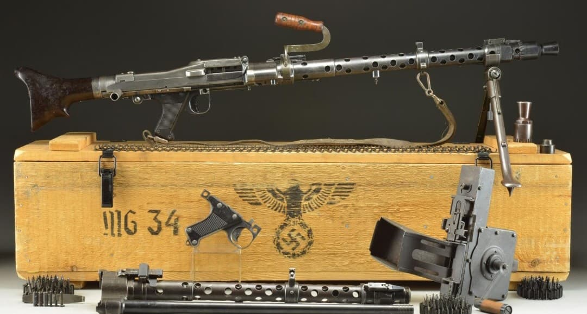
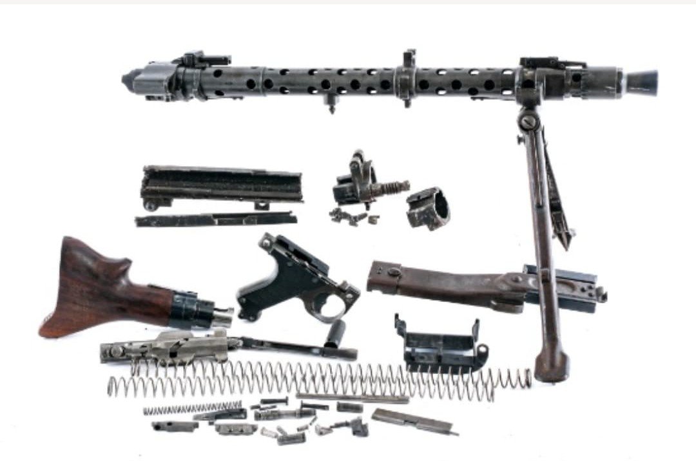
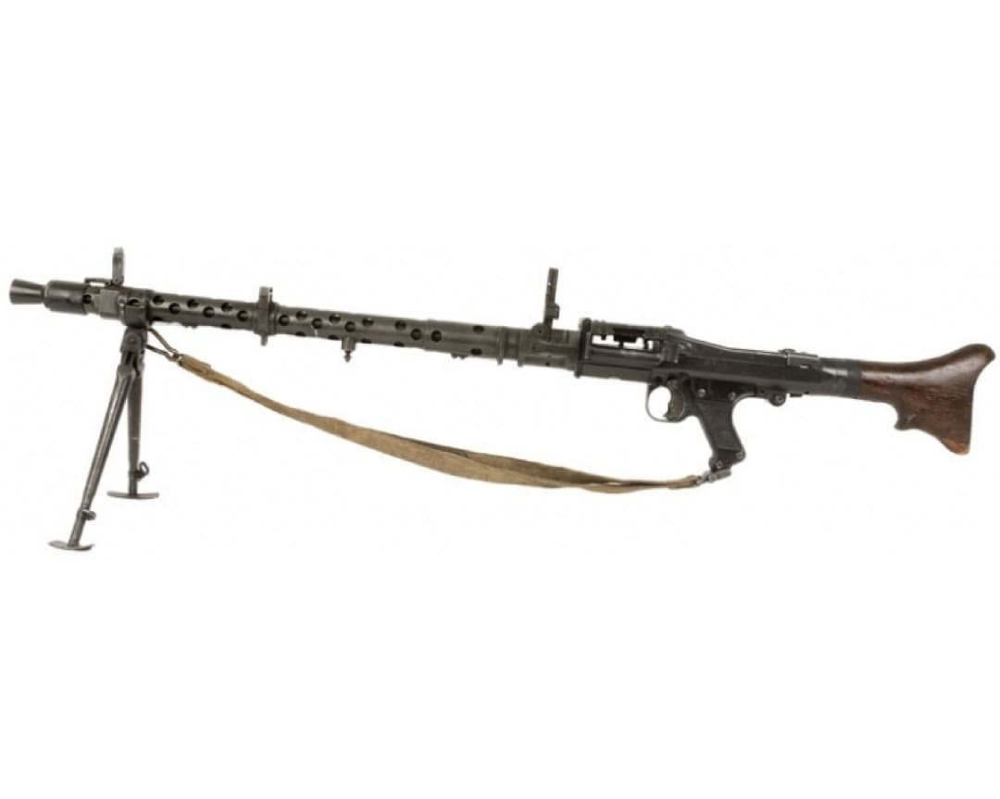
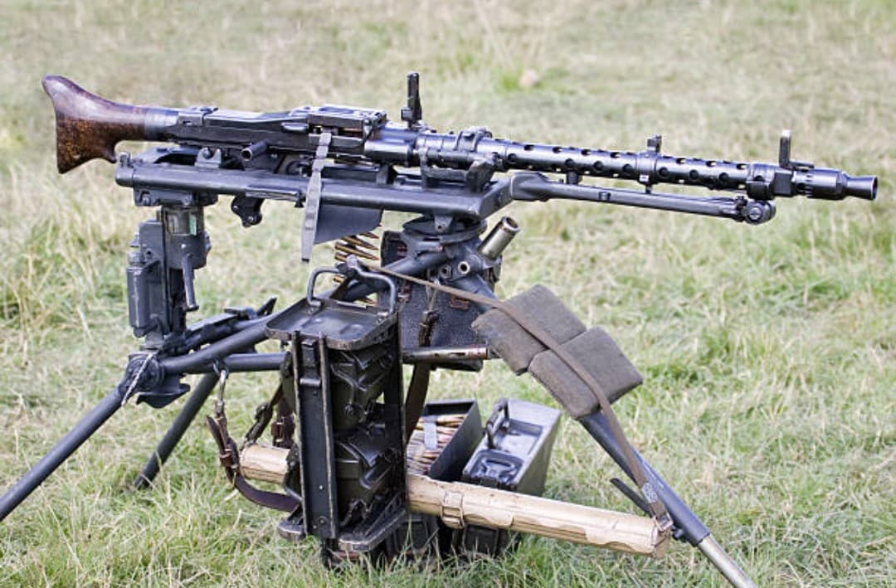
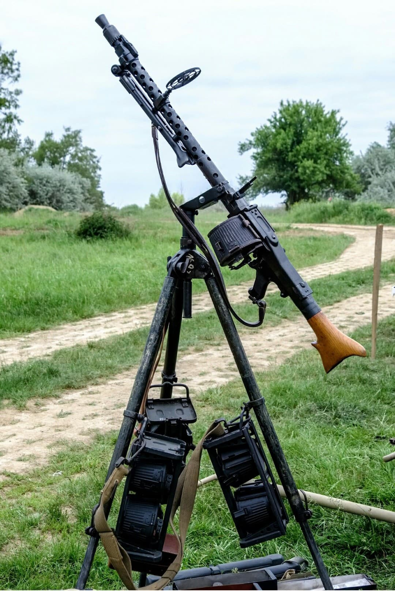

La MG 34 (Maschinengewehr 34) est la première véritable mitrailleuse polyvalente de l’histoire. Introduite en 1934, elle est conçue pour remplacer la MG 13 et offrir une arme unique capable d’assurer les rôles de mitrailleuse légère, moyenne, antiaérienne et montée sur véhicule.
Sa fabrication repose sur des tolérances d’usinage extrêmement fines, ce qui lui confère une précision remarquable et une cadence de tir très élevée. En contrepartie, elle est coûteuse à produire et sensible aux environnements poussiéreux.
La MG 34 fonctionne par court recul du canon et utilise la cartouche 7,92×57 mm Mauser. Sa conception modulaire permet de l’employer dans une grande variété de configurations :
Cette polyvalence permet à la Wehrmacht de standardiser son armement autour d’un seul modèle.


La MG 34 est déployée dans toutes les unités de la Wehrmacht. Sur bipied, elle sert d’appui-feu dans les escouades d’infanterie. Sur trépied Lafette, elle devient une mitrailleuse moyenne capable de tir indirect grâce à son système de visée complexe.
Elle équipe également les véhicules blindés, les semi-chenillés, et les affûts antiaériens légers. Sa cadence élevée en fait une arme redoutable, mais elle s’enraye plus facilement que la MG 42 dans les environnements poussiéreux.

Conçue par Heinrich Vollmer et finalisée par Rheinmetall, la MG 34 est produite par plusieurs usines allemandes, dont Mauser et Waffenwerke Brünn. Sa fabrication exige des machines de précision, ce qui limite sa production en temps de guerre.
Entre 1934 et 1945, environ 380 000 à 577 000 unités sont produites selon les sources.

